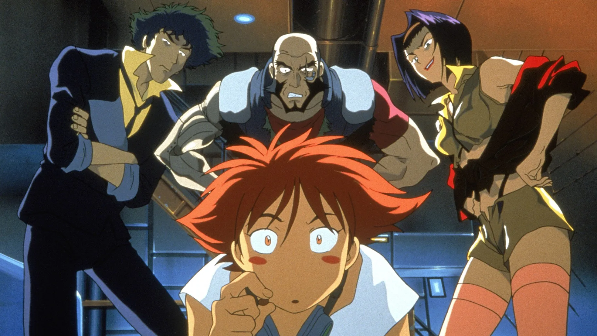

Attack on Titan
Attack on Titan follows humanity's struggle to survive against gigantic humanoid
creatures known as Titans, while uncovering dark secrets about their world.
Watch if you enjoy intense action, mystery, and epic battles.
Available on: Hulu, Crunchyroll

Cowboy Bebop
Cowboy Bebop follows the adventures of a group of bounty hunters who travel
across the solar system, chasing criminals and confronting their dark, mysterious pasts along
the way.
Watch if you enjoy action, sci-fi, and stylish storytelling.
Available on: Crunchyroll

Monster
Monster follows Dr. Kenzo Tenma, a brilliant surgeon whose life spirals into
chaos after saving the life of a young boy who grows up to be a dangerous serial killer.
Watch if you enjoy psychological thrillers, suspense, and complex moral dilemmas.
Available on: Netflix